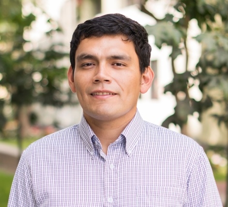
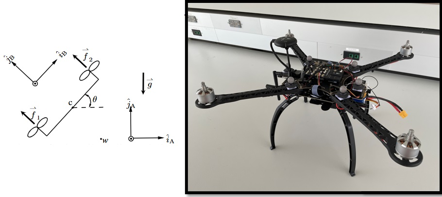
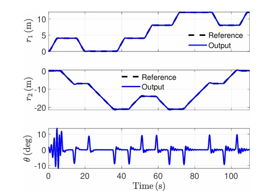
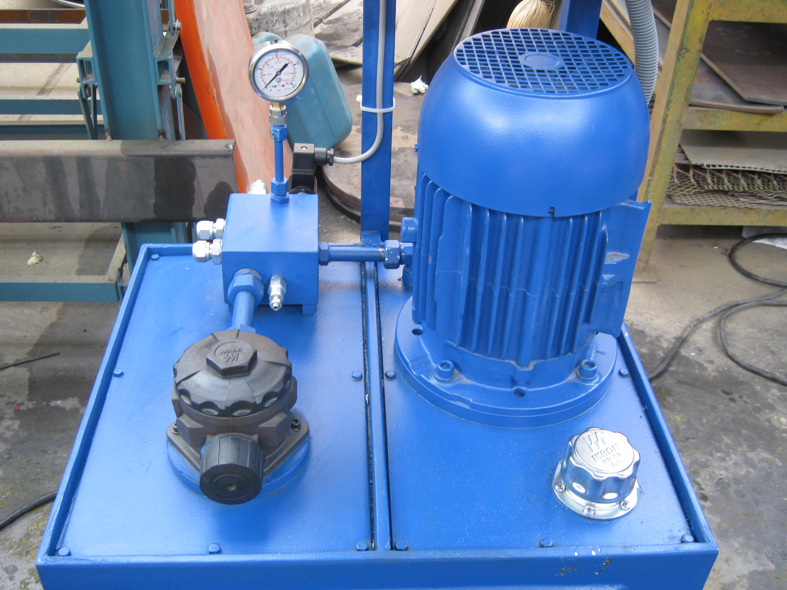
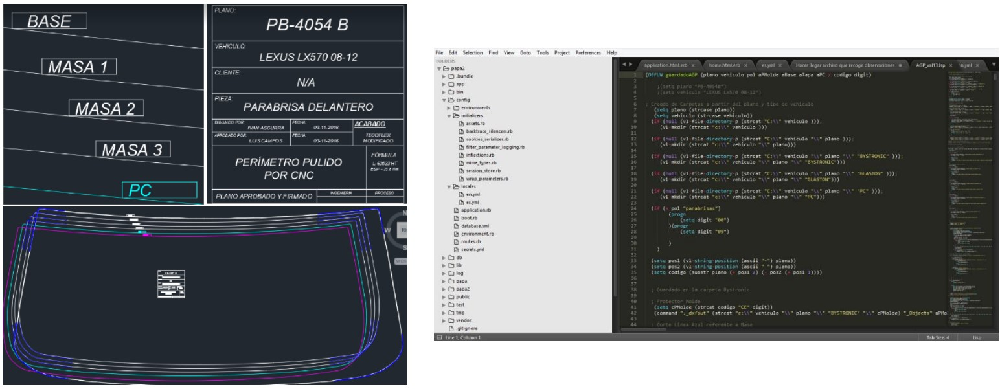
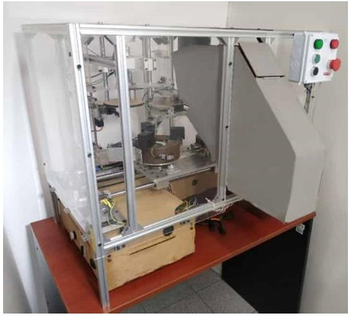

01 / ADAPTATION
Nonlinear Adaptive Control
Adaptive backstepping, inversion-free control, and online compensation for uncertain dynamics.
I am Jhon Manuel Portella Delgado, a Postdoctoral Research Fellow in Aerospace Engineering at the University of Michigan.
My research focuses on nonlinear adaptive control, safe autonomy, and data-driven methods that enable dynamical systems to operate reliably under uncertainty.

A visualization of constrained bicopter motion, illustrating the interaction between nonlinear dynamics, feedback control, and safety requirements.
Bicopter simulation with prescribed safe operating boundaries and state constraints.
Real engineering systems rarely operate under perfectly known conditions.
My research investigates how adaptive controllers can regulate nonlinear systems while respecting constraints on their motion and operating states.
The bicopter serves as a representative example for studying nonlinear dynamics, uncertain parameters, stability, and safety.
Related Publications ↗My work lies at the intersection of control theory, optimization, system identification, and autonomous dynamical systems.
I develop adaptive control algorithms for systems whose dynamics are uncertain, nonlinear, or difficult to model accurately.
My doctoral research at the University of Maryland, Baltimore County focused on adaptive and safe control of nonlinear systems with multiplicative uncertainty and state constraints.
At the University of Michigan, I work with Professor Dennis S. Bernstein on adaptive control, predictive control, extremum seeking, and aerospace applications.
Before pursuing my doctoral studies, I worked in industry designing and implementing automated hydraulic systems and engineering design automation solutions for mining and industrial applications.
My research develops mathematical methods that allow engineered systems to adapt, learn, and maintain performance when their models are incomplete.
Adaptive backstepping, inversion-free control, and online compensation for uncertain dynamics.
Constraint lifting, stability guarantees, and control methods that respect prescribed operating boundaries.
Data-driven identification and predictive optimization for nonlinear dynamical systems.
Online optimization and adaptive command generation without requiring an explicit performance model.
Flight control, constrained guidance, stabilization, and autonomous aerospace systems.
Combining physical knowledge with real-time learning to develop reliable adaptive controllers.
Selected examples of my research and professional engineering work.

Development of nonlinear adaptive control methods for uncertain aerial vehicles.

Control of uncertain nonlinear systems using dynamic extension and adaptive methods.

Design and implementation of automated hydraulic solutions for industrial applications.

Automation of engineering drawing, CAD processes, and repetitive design tasks.

A low-cost mechatronic system developed for glass-bottle recycling.
Journal papers, conference publications, accepted contributions, and ongoing manuscripts listed in my academic CV.
University of Michigan · Aerospace Engineering
Research with Professor Dennis S. Bernstein on adaptive control and aerospace applications.
University of Maryland, Baltimore County
Dissertation: Adaptive and Safe Control of Nonlinear Systems with Multiplicative Uncertainty and State Constraints.
Pontifical Catholic University of Peru
Teaching in automatic control, robotics, dynamics, and engineering design.
University of Melbourne · Australia
Automated hydraulic systems, engineering design automation, and industrial projects.
Pontifical Catholic University of Peru
Video plays muted. Use the player controls to enable sound. Open on YouTube ↗
My doctoral work develops methods for controlling uncertain nonlinear systems while preserving stability and prescribed safety constraints.
Watch Full Defense ↗My teaching experience spans control theory, robotics, dynamics, mechatronics, and engineering design.
Feedback control, system dynamics, stability, and controller design.
State-space models, controllability, observability, and observer design.
Nonlinear systems, adaptive methods, and Lyapunov stability analysis.
Integrated mechanical, electronic, and computational engineering systems.
I welcome research collaborations and conversations about adaptive control, safe autonomous systems, and aerospace engineering.